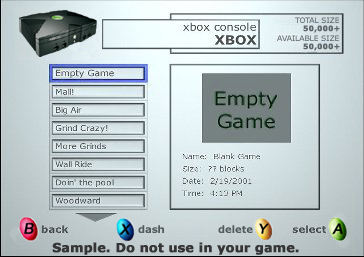
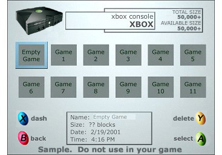

Note This section assumes that users will not have to name the saved games and that the games will be named based on contextual information like game segment, date/time, number of people in the party, etc. This is just one method that can be used to select the slot for saving games. Publishers should feel free to save games in whatever method works best for their game.
In the usability test, users were presented with models similar to the ones for load game, as shown below. The main difference was the presence of a Blank Game or Empty Game space in the first location for each model.
| Model | Screenshot |
|---|---|
| Hybrid |  |
| Thumbnail |  |
Participants would have to click A while focused on Blank Game to save a new game. Clicking A on any other game brings up a confirmation message telling the users that they are about to overwrite a saved game and asking if this what the users really want to do. For some titles, an interaction like this will make sense; for others, it will not make sense. This UI attempts to allow users to cope with the potentially large amount of available space on the hard disk without limiting them to a fixed number of saved games or making them name all of the saved games.
None of the participants had trouble saving new games or overwriting existing games using either model.
Usability Issues with Hybrid
Recommendation: Use "Empty Space" instead of "Blank Game"
Recommendation: Insert a new saved game when Blank Game is selected for the save location rather than overwriting Blank Game.
Participants in the usability test preferred the hybrid model to the thumbnail model for saving games by the same 4 to 3 ratio.
Usability Issues with Thumbnail
Recommendation: Use "Empty Space" instead of "Blank Game"
Recommendation: Insert a new saved game when Blank Game is selected for the save location rather than overwriting Blank Game.
Please use the following error or status messages when you are loading or storing user data.
Note "%s" should be filled in with what the title is trying to save, for example, playbook, game, or persistent data.
Display this message when your title is writing to a memory unit:
Display this message when your title is writing to the hard disk. Display if the save takes longer than five seconds.
Display this message when your title is loading a game from the hard disk or a memory unit:
Display this message when a saved game cannot be loaded because the file end prematurely or there is some other type of read error:
Display this message when the title cannot read any information from a memory unit. This error happens when the memory unit can't be mounted.
Display this message when a user tries to save a game to a memory unit or hard disk and not enough space is available. If there is no title data to delete or overwrite and there is still not enough space for the saved game, do not let users select that memory device. Replace the "X" with the number of blocks that need to be freed up for them to save the game.